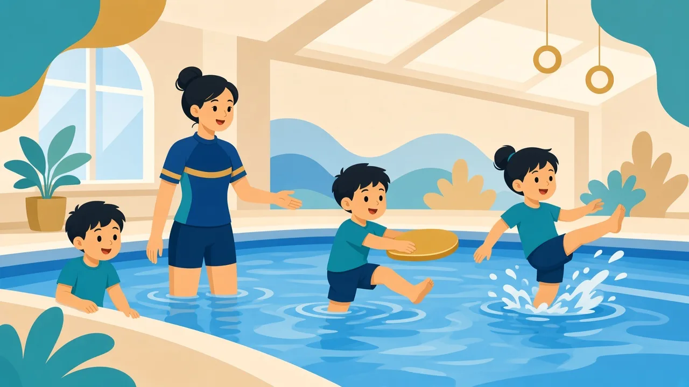
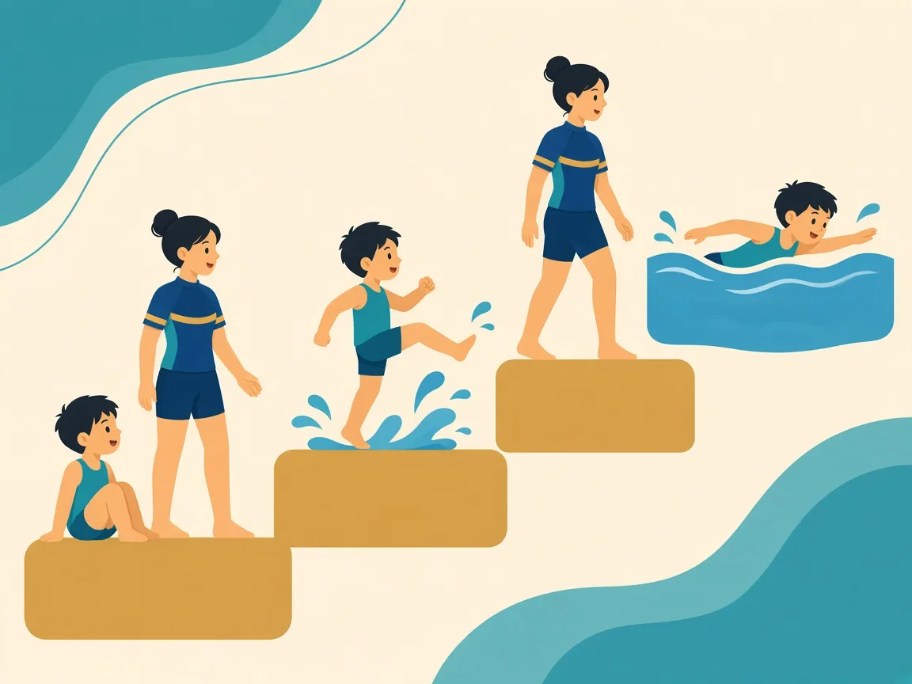

從帕運精神到本地普及游泳：家長可認識的發展脈絡

游泳同時鍛鍊全身協調、呼吸節奏與水中安全意識，對許多有特殊需要的孩子來說，是既可復康又可社交、甚至可走向競技的運動。國際帕運（Paralympic）精神強調「精神在運動中」（Spirit in Motion）：運動員以表現激勵世界，持續向前。

帕運游泳以字母＋數字標示影響程度（數字愈小通常代表影響愈大）：
一般習泳課不必先做競賽分級；分級主要用於正式賽事。了解這些概念，有助家長明白「不同程度的身體條件，都有對應的游泳參與方式」。
香港游泳教師總會（HKSTA）設有特殊需要人士游泳教師證書課程，並於 2016 年創立「香港特殊需要人士游泳學院」，目標包括：提供普及與持續的習泳機會、強化身心與人際關係、鼓勵教師投身特殊需要游泳教學。學院曾於多區舉辦課程，並推動學員參與水上安全活動及相關比賽。
我們聚焦普及與持續的水中學習：先建立安全感與基本水感，再按能力進階。若家庭日後有興趣參加體驗日、社區訓練班或協會活動，我們可協助理解方向，並強調安全與個別節奏永遠優先於比賽成績。
溫馨提示：本頁為家長教育整理，供認識特殊需要與游泳教學方向參考，並非醫療診斷或治療建議。孩子個別安排請 WhatsApp 與教練商討。
不必。大多數家庭的目標是水中安全、自信與健康。競技是其中一條路徑，不是唯一標準。
視乎孩子能力、年齡與相關會籍／資格要求。我們可先把基礎打穩，再按家長意願介紹公開資訊與查詢渠道。
延伸閱讀：肢體・視覺・聽力與游泳 · 智力及多重障礙 · 總覽